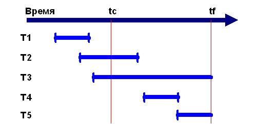
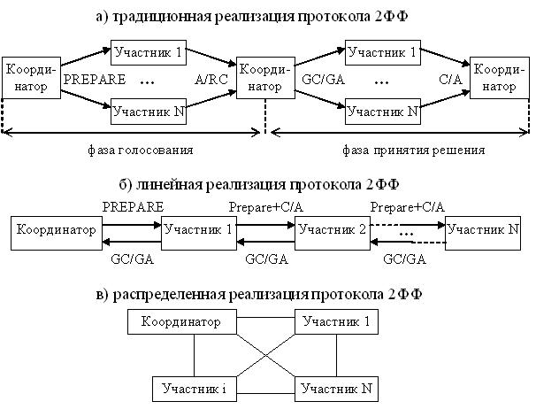
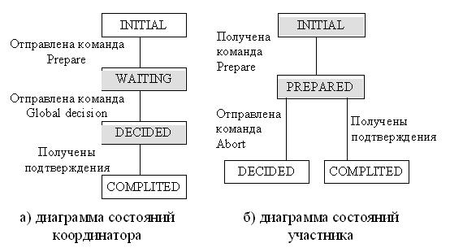

Восстановление данных. Управление параллелизмом
Виды восстановления данных
Восстановление базы данных может производиться в следующих случаях:
- Индивидуальный откат транзакции. Откат индивидуальной транзакции может быть инициирован либо самой транзакцией путем подачи команды ROLLBACK, либо системой. СУБД может инициировать откат транзакции в случае возникновения какой-либо ошибки в работе транзакции (например, деление на нуль) или если эта транзакция выбрана в качестве жертвы при разрешении тупика.
- Мягкий сбой системы (аварийный отказ программного обеспечения). Мягкий сбой характеризуется утратой оперативной памяти системы. При этом поражаются все выполняющиеся в момент сбоя транзакции, теряется содержимое всех буферов базы данных. Данные, хранящиеся на диске, остаются неповрежденными. Мягкий сбой может произойти, например, в результате аварийного отключения электрического питания или в результате неустранимого сбоя процессора.
- Жесткий сбой системы (аварийный отказ аппаратуры). Жесткий сбой характеризуется повреждением внешних носителей памяти. Жесткий сбой может произойти, например, в результате поломки головок дисковых накопителей.
Во всех трех случаях основой восстановления является избыточность данных, обеспечиваемая журналом транзакций.
Как и страницы базы данных, данные из журнала транзакций не записываются сразу на диск, а предварительно буферизируются в оперативной памяти. Таким образом, система поддерживает два вида буферов - буферы страниц базы данных и буферы журнала транзакций.
Страницы базы данных, содержимое которых в буфере (в оперативной памяти) отличается от содержимого на диске, называются "грязными" (dirty) страницами. Система постоянно поддерживает список "грязных" страниц - dirty-список. Запись "грязных" страниц из буфера на диск называется выталкиванием страниц во внешнюю память. Очевидно, необходимо предусмотреть такие правила выталкивания буферов базы данных и буферов журнала транзакций, которые обеспечивали бы два требования:
- Максимальную скорость выполнения транзакций. Для этого необходимо выталкивать страницы как можно реже. В идеале, если оперативная память была бы бесконечной, и сбои никогда бы не происходили, наилучшим выходом была бы загрузка всей базы данных в оперативную память, работа с данными только в оперативной памяти, и запись измененных страниц на диск только в момент завершения работы всей системы.
- Гарантию, что при возникновении сбоя (любого типа), данные завершенных транзакций можно было бы восстановить, а данные незавершенных транзакций бесследно удалить, т.е. обеспечение восстановления последнего согласованного состояния базы данных. Для этого что-то выталкивать на диск все-таки необходимо, даже если мы обладали бы бесконечной оперативной памятью.
Таким образом, имеется две причины для периодического выталкивания страниц во внешнюю память - недостаток оперативной памяти и возможность сбоев.
Основным принципом согласованной политики выталкивания буфера журнала и буферов страниц базы данных является то, что запись об изменении объекта базы данных должна попадать во внешнюю память журнала раньше, чем измененный объект оказывается во внешней памяти базы данных. Соответствующий протокол журнализации (и управления буферизацией) называется Write Ahead Log (WAL) - "пиши сначала в журнал", и состоит в том, что если требуется вытолкнуть во внешнюю память измененный объект базы данных, то перед этим нужно гарантировать выталкивание во внешнюю память журнала записи о его изменении. Это означает, что если во внешней памяти базы данных содержится объект, к которому применена некоторая команда модификации, то во внешней памяти журнала транзакций содержится запись об этой операции. Обратное неверно - если во внешней памяти журнала содержится запись о некотором изменении объекта, то во внешней памяти базы данных может и не быть самого измененного объекта.
Дополнительное условие на выталкивание буферов накладывается тем требованием, что каждая успешно завершившаяся транзакция должна быть реально зафиксирована во внешней памяти. Какой бы сбой не произошел, система должна быть в состоянии восстановить состояние базы данных, содержащее результаты всех зафиксированных к моменту сбоя транзакций.
Третьим условием выталкивания буферов является ограниченность объемов буферов базы данных и журнала транзакций. Периодически или при наступлении определенного события (например, количество страниц в dirty-списке превысило определенный порог, или количество свободных страниц в буфере уменьшилось и достигло критического значения) система принимает так называемую контрольную точку. Принятие контрольной точки включает выталкивание во внешнюю память содержимого буферов базы данных и специальную физическую запись контрольной точки, которая представляет собой список всех осуществляемых в данный момент транзакций.
Оказывается, что минимальным требованием, гарантирующим возможность восстановления последнего согласованного состояния базы данных, является выталкивание при фиксации транзакции во внешнюю память журнала всех записей об изменении базы данных этой транзакцией. При этом последней записью в журнал, производимой от имени данной транзакции, является специальная запись о конце этой транзакции.
Индивидуальный откат транзакции
Для того чтобы можно было выполнить по журналу транзакций индивидуальный откат транзакции, все записи в журнале от данной транзакции связываются в обратный список. Началом списка для не закончившихся транзакций является запись о последнем изменении базы данных, произведенном данной транзакцией. Для закончившихся транзакций (индивидуальные откаты которых уже невозможны) началом списка является запись о конце транзакции, которая обязательно вытолкнута во внешнюю память журнала. Концом списка всегда служит первая запись об изменении базы данных, произведенном данной транзакцией. В каждой записи имеется уникальный системный номер транзакции, чтобы можно было восстановить прямой список записей об изменениях базы данных данной транзакцией.
Индивидуальный откат транзакции выполняется следующим образом:
а) Просматривается список записей, сделанных данной транзакцией в журнале транзакций (от последнего изменения к первому изменению).
б) Выбирается очередная запись из списка данной транзакции.
в) Выполняется противоположная по смыслу операция: вместо операции INSERT выполняется соответствующая операция DELETE, вместо операции DELETE выполняется INSERT, и вместо прямой операции UPDATE обратная операция UPDATE, восстанавливающая предыдущее состояние объекта базы данных.
г) Любая из этих обратных операций также журнализируются. Это необходимо делать, потому что во время выполнения индивидуального отката может произойти мягкий сбой, при восстановлении после которого потребуется откатить такую транзакцию, для которой не полностью выполнен индивидуальный откат.
д)При успешном завершении отката в журнал заносится запись о конце транзакции.
Восстановление после мягкого сбоя
Несмотря на протокол WAL, после мягкого сбоя не все физические страницы базы данных содержат измененные данные, т.к. не все "грязные" страницы базы данных были вытолкнуты во внешнюю память.
Последний момент, когда гарантированно были вытолкнуты "грязные" страницы - это момент принятия последней контрольной точки. Имеется 5 вариантов состояния транзакций по отношению к моменту последней контрольной точки и к моменту сбоя (рис.1) .

Рисунок 1- Пять вариантов транзакций (tc - контрольная точка, tf - отказ системы)
Последняя контрольная точка принималась в момент tc. Мягкий сбой системы произошел в момент tf. Транзакции T1-T5 характеризуются следующими свойствами.

Восстановление после жесткого сбоя
При жестком сбое база данных на диске нарушается физически. Основой восстановления в этом случае является журнал транзакций и архивная копия базы данных. Архивная копия базы данных должна создаваться периодически, а именно с учетом скорости наполнения журнала транзакций.
Восстановление начинается с обратного копирования базы данных из архивной копии. Затем выполняется просмотр журнала транзакций для выявления всех транзакций, которые закончились успешно до наступления сбоя. (Транзакции, закончившиеся откатом до наступления сбоя, можно не рассматривать). После этого по журналу транзакций в прямом направлении повторяются все успешно законченные транзакции. При этом нет необходимости отката транзакций, прерванных в результате сбоя, т.к. изменения, внесенными этими транзакциями, отсутствуют после восстановления базы данных из резервной копии.
Наиболее плохим случаем является ситуация, когда разрушены физически и база данных, и журнал транзакций. В этом случае единственное, что можно сделать - это восстановить состояние базы данных на момент последнего резервного копирования. Для того чтобы не допустить возникновение такой ситуации, базу данных и журнал транзакций обычно располагают на физически разных дисках, управляемых физически разными контроллерами.
Восстановление данных и стандарт SQL
Стандарт языка SQL не содержит требований к восстановимости данных, оставляя эти вопросы на усмотрение разработчиков СУБД.
Восстановление и копирование базы данных Oracle
Независимо от того, какую схему копирования и восстановления изберете для базы данных ORACLE, резервное копирование средствами операционной системы всех файлов базы данных абсолютно необходимо как часть общей стратегии предохранения от потенциальных сбоев носителя, которые могут повредить эти файлы.
Полное копирование - это копирование средствами операционной системы всех файлов данных, онлайновых файлов журнала и управляющих файлов, составляющих базу данных ORACLE. Полное копирование должно также включать копирование файлов параметров, ассоциированных с этой базой данных. Полное копирование базы данных проводится, когда база данных чисто закрыта; это означает, что оно не проводится после сбоя инстанции и т.п. В это время все файлы, составляющие базу данных, закрыты, и содержимое их согласовано по отношению к текущему моменту времени.
Копии файлов данных, полученные при полном копировании, полезны при любом типе восстановления носителя:
- если база данных работает в режиме NOARCHIVELOG, и сбой диска повреждает некоторые или все файлы, составляющие базу данных, то самые последние полные копии могут использоваться для реставрации (не восстановления) базы данных. Так как архивированный журнал повторения недоступен для приведения базы данных в состояние на текущий момент, вся работа, проделанная в базе данных после последнего полного копирования, должна быть повторена заново;
- если база данных работает в режиме ARCHIVELOG, и сбой диска повреждает некоторые или все файлы, составляющие базу данных, то самые последние полные копии могут использоваться как часть восстановления базы данных. После реставрации необходимых файлов данных из полных копий можно продолжить восстановление путем применения архивированных и текущих онлайновых файлов журнала повторения, чтобы привести реставрированные файлы в состояние на текущий момент времени.
Частичное копирование - это любое (отличное от полного) копирование средствами операционной системы файлов базы данных, осуществляемое, когда база данных открыта либо закрыта. Примерами частичного копирования служат:
- копирование всех файлов данных конкретного табличного пространства;
- копирование одиночного файла данных;
- копирование управляющего файла.
Частичные копии могут быть полезными лишь для базы данных, работающей в режиме ARCHIVELOG. Так как архивированный журнал повторения присутствует, файлы данных, реставрированные из частичных копий, могут быть согласованы с остальной частью базы данных с помощью процедур восстановления.
Частичное копирование может включать файлы данных базы данных. Отдельные файлы данных или их группы можно копировать независимо от остальных файлов данных, онлайновых файлов журнала и управляющих файлов. Файл данных можно копировать, когда он в состоянии офлайн или онлайн.
Любой файл данных можно копировать, когда он находится в офлайне. Следующие ситуации показывают примеры офлайновых копирований:
- БД закрыта. Как следствие, все файлы данных БД закрыты, или находятся в состоянии офлайн. Любое копирование файлов данных закрытой БД считается офлайновым копированием.
- БД открыта, но табличное пространство находится в состоянии офлайн. Как следствие, все файлы данных этого табличного пространства обычно находятся в офлайне. Любое копирование файлов данных офлайнового табличного пространства считается офлайновым копированием.
Если база данных работает в режиме ARCHIVELOG, то любой файл данных можно копировать, когда база данных открыта, ассоциированное табличное пространство в онлайне, и сам этот файл данных находится в онлайне и подвергается нормальным операциям базы данных. Такой тип копирования называется онлайновым копированием.
Копия онлайнового файла данных является копией несогласованных данных; нельзя гарантировать, что все данные в этой копии согласованы по отношению к какой-либо точке времени. Однако эти данные легко сделать согласованными с помощью процедур восстановления базы данных.
Когда начинается копирование онлайнового табличного простраства или индивидуального файла данных (командой ALTER TABLESPACE с опцией BEGIN BACKUP), ORACLE временно прекращает запись контрольных точек в заголовки копируемых файлов данных. Это значит, что после реставрации этого файла данных из копии он "знает" лишь о самой последней контрольной точке, которая была выполнена ПЕРЕД копированием табличного пространства, но не о тех контрольных точках, которые происходили ВО ВРЕМЯ копирования. Как следствие, ORACLE требует, чтобы по время восстановления были применены соответствующие файлы журнала повторения. Когда онлайновое копирование заканчивается (как указывается командой ALTER TABLESPACE с опцией END BACKUP), ORACLE продвигает заголовок файла данных к текущей контрольной точке базы данных.
Восстановление базы данных
Процедуры восстановления
В любой системе баз данных вероятность сбоя системы существует всегда. Когда происходит сбой системы, база данных должна быть восстановлена как можно быстрее и с минимальным возможным ущербом для пользователей.
Восстановление от любого типа системного сбоя требует:
- Определения, какие структуры базы данных не затронуты, а какие требуют восстанвления.
- Осуществления требуемых шагов восстановления.
- Перезапуска базы данных для возобновления нормальной работы.
- Проверки, что никакая работа не потеряна, и что в базе данных нет некорректных данных.
Цель - как можно скорее вернуться к норме, и в то же время изолировать пользователей базы данных от любых проблем и защитить их от возможной потери или дублирования их работы.
Процесс восстановления варьируется в зависимости от типа сбоя и от того, какие файлы базы данных затронуты этим сбоем.
Многовариантность
Эта тема очень тесно связана с управлением одновременным доступом, поскольку создает основу для механизмов управления одновременным доступом в СУБД Oracle - Oracle использует модель многовариантной согласованности по чтению при одновременном доступе. По сути это механизм, с помощью которого СУБД Oracle обеспечивает:
- согласованность по чтению для запросов: запросы выдают согласованные результаты на момент начала их выполнения;
- неблокируемые запросы: запросы не блокируются сеансами, в которых изменяются данные, как это бывает в других СУБД.
Это две очень важные концепции СУБД Oracle. Термин многовариантность произошел от того, что фактически СУБД Oracle может одновременно поддерживать множество версий данных в базе данных. Понимая сущность многовариантности, всегда можно понять результаты, получаемые из базы данных.
Еще одна демонстрация многовариантности: в БД имеется несколько версий одной и той же информации, по состоянию на различные моменты времени. СУБД Oracle использует эти сделанные в разное время "моментальные снимки" данных для поддержки согласованности по чтению и неблокируемости запросов. Это согласованное по чтению представление данных всегда выполняется на уровне оператора SQL, - результаты выполнения любого оператора SQL всегда согласованы на момент его начала. Именно это свойство позволяет получать предсказуемый набор данных в результате.
Реализация блокирования
СУБД использует блокировки, чтобы в каждый момент времени те или иные данные могли изменяться только одной транзакцией. Говоря проще, блокировки - это механизм обеспечения одновременного доступа. При отсутствии определенной модели блокирования, предотвращающей одновременное изменение, например, одной строки, многопользовательский доступ к базе данных попросту невозможен. Однако при избыточном или неправильном блокировании одновременный доступ тоже может оказаться невозможным. Если пользователь или сама СУБД блокирует данные без необходимости, то работать одновременно сможет меньшее количество пользователей. Поэтому понимание назначения блокирования и способов его реализации в используемой СУБД принципиально важно для создания корректных и масштабируемых приложений.
Блокировка - механизм SQL для управления параллельными операциями. Блокировки приостанавливают определенные операции над БД на то время, пока активны другие операции или транзакции.
Разделяемые блокировки (shared locks) или S-блокировки (S-locks) - могут одновременно устанавливаться многими пользователями, т.е. любой пользователь имеет доступ к данным, но не может изменять их.
Исключительные блокировки (exclusive locks) или X-блокировки (X-locks) - позволяют иметь доступ к данным только владельцу блокировки.
Последовательность установления блокировок Oracle
- нахождение адреса строки, которую необходимо заблокировать;
- переход на эту строку;
- блокировка этой строки (ожидая снятия блокировки, если она уже заблокирована и при этом на используется NOWAIT).
Простейшими средствами обеспечения очередности доступа, используемые для координации многопользовательского доступа к общим структурам данных, объектам и файлам являются внутренние блокировки и фиксаторы.
Фиксаторы - блокировки, удерживаемые в течении непродолжительного времени (например для изменения структуры данных в памяти). Используются для защиты определенных структур памяти.
Один процесс - один фиксатор. Если владелец фиксатора «скончается», то очистка выполняется процессом PMON.
Внутренние блокировки можно устанавливать на разных уровнях, что позволяет иметь несколько разделяемых блокировок и блокировать с разными уровнями совместимости. Работают медленнее фиксаторов, но обеспечивают большие функциональные возможности.
Пессимистические блокировки (pessimistic locks) - предотвращают доступ к данным для одновременных транзакций.
Этот метод блокирования должен использоваться непосредственно перед изменением значения на экране, например, когда пользователь выбирает определенную строку с целью изменения (допустим, щелкая на кнопке в окне). Итак, пользователь запрашивает данные без блокирования:
Приложение передает значения для связываемых переменных в соответствии с данными на экране и повторно запрашивает ту же самую строку из базы данных, но в этот раз блокирует ее изменения другими сеансами. Вот почему такой подход называется пессимистическим блокированием. Мы блокируем строку перед попыткой изменения, поскольку сомневается, что она останется неизменной.
Оптимистические блокировки (optimistic locks) - отслеживают возникновение конфликтов и при необходимости выполняют откат транзакций.
Этот метод состоит в том, чтобы сохранять старое и новое значения в приложении и использовать их при изменении следующим образом:
Update table
Set column1 = :new_column1, column2 = :new_column2, ....
Where column1 = :old_column1
And column2 = :old_column2
Здесь мы оптимистически надеемся, что данные не изменились. Если в результате изменена одна строка, значит, нам повезло: данные не изменились с момента считывания. Если изменено ноль строк, мы проиграли - кто-то уже изменил данные и необходимо решить, что делать, чтобы это изменение не потерять.
СУБД Oracle обеспечивает грануляцию блокировок по уровням (см. табл. 17)
Таблица 17 - Грануляция блокировок
Уровни блокирования | Происходящее |
Таблица | блокируется вся таблица |
Пространство таблицы или БД | блокируется физическая область накопителя, в которой размещаются как часть таблицы, так и несколько таблиц |
Строки | применяется к определенной строке таблицы |
Страницы | блокирование страницы (блока) данных на физическом уровне, (очень эффективна с точки зрения производительности) |
Элемент | применяется только к одному значению, столбцу или строке (идеально с точки зрения параллелизма, но работает очень медленно) |
Эскалация блокировок - увеличение размера блокируемых объектов.
В Oracle применяется преобразование блокировок - блокировка низкого уровня преобразуется к более высокому (ограничивающему) уровню.
Стоит заметить, что и в этом случае тоже можно использовать оператор SELECT FOR UPDATE NOWAIT. Представленный выше оператор UPDATE позволяет избежать потери изменений, но может приводить к блокированию, "зависая" в ожидании завершения изменения строки другим сеансом. Если все приложения используют оптимистическое блокирование, то применение простых операторов UPDATE вполне допустимо, поскольку строки блокируются на очень короткое время выполнения и фиксации изменений. Однако если некоторые приложения используют пессимистическое блокирование, удерживая блокировки строк достаточно долго, имеет смысл выполнять оператор SELECT FOR UPDATE NOWAIT непосредственно перед оператором UPDATE, чтобы избежать блокирования другим сеансом
Пример: Select … FOR UPDATE; => исключительная блокировка выбранных строк и ROW SHARED TABLE - совместное блокирование строк таблицы (чтобы ни один сеанс не могли заблокировать всю таблицу). После изменения - преобразование блокировок. |  |
|---|
При использовании пессимистического блокирования пользователь может быть уверен, что изменяемые им на экране данные сейчас ему "принадлежат" - он получил запись в свое распоряжение, и никто другой не может ее изменять. Можно возразить, что, блокируя строку до изменения, вы лишаете к ней доступа других пользователей и, тем самым, существенно снижаете масштабируемость приложения. Но обновлять строку в каждый момент времени сможет только один пользователь (если мы не хотим потерять изменения). Если сначала заблокировать строку, а затем изменять ее, пользователю будет удобнее работать. Если же пытаться изменить, не заблокировав заранее, пользователь может напрасно потерять время и силы на изменения, чтобы в конечном итоге получить сообщение: "Извините, данные изменились, попробуйте еще раз". Чтобы ограничить время блокирования строки перед изменением, можно снимать блокировку в приложении, если пользователь занялся чем-то другим и некоторое время не использует строку, или использовать профили ресурсов (Resource Profiles) в базе данных для отключения простаивающих сеансов.
Более того, блокирование строки в Oracle не мешает ее читать, как в других СУБД; блокирование строки не мешает обычной работе с базой данных. Все это исключительно благодаря соответствующей реализации механизмов одновременного доступа и блокирования в Oracle. В других СУБД верно как раз обратное. Если попытаться использовать в них пессимистическое блокирование, ни одно приложение не будет работать. Тот факт, что в этих СУБД блокирование строки не дает возможности выполнять к ней запросы, не позволяет даже рассматривать подобный подход. Поэтому иногда приходится "забывать" правила, выработанные в процессе работе с одной СУБД, чтобы успешно разрабатывать приложения для другой.
Типы блокировок
Выделяют общие блокировки, к которым относятся блокировки ЯМД (DML Locks), блокировки ЯОД (DDL Locks) и внутренние блокировки и фиксаторы (защелки) (internal locks, latches), а также для OPS - Oracle parallel Server характерны распределенные блокировки (distributed locks), которые используются для согласования ресурсов машин, входящих в кластер р (устанавливаются экземплярами баз данных, а не отдельными транзакциями) и блокировки параллельного управления кэшем (PCM Parallel Cache Management Locks) - защищают блоки данных в кэше при использовании несколькими экземплярами.
Подробнее рассмотрим общие блокировки.
Примеры блокирования вручную
SELECT … FOR UPDATE - основной метод явного блокирования данных вручную.
LOCK TABLE - блокировка таблиц, но не строк в ней.
LOCK TABLE IN EXCLUSIVE MODE - блокировка таблицы в эксклюзивном режиме (используется редко, при выполнении большого пакетного изменения).
Уровни изоляции транзакций
Уровни изоляции транзакций показывают какие типы конфликтов допустимы (см. табл.18)
Таблица 18 - Уровни изволяции транзакций
Уровень изоляции | Потерянные изменения | Грязное чтение | Неповторяющееся чтение | Фантом |
READ UNCOMMITED | Нет | Да | Да | Да |
READ COMMITED | Нет | Нет | Да | Да |
REPEATABLE READ | Нет | Нет | Нет | Да |
SERIALIZABLE | Нет | Нет | Нет | Нет |
READ UNCOMMITED (чтение без фиксации) - допускает неоднократное выполнение одного и того же запроса с разными результатами независимо от того, были ли результаты параллельных транзакций зафиксированы.
READ COMMITED (чтение с фиксацией) - допускает неоднократное выполнение одного и того же запроса с разными результатами, но при условии, что результаты параллельных транзакций были зафиксированы.
REPEATABLE READ (повторяющееся чтение) - допускает из всех возможных видов неповторяющегося чтения только фантомные вставки.
SERIALIZABLE (последовательное выполнение) - каждая транзакция выполняется изолированно, не влияя на выполнение других параллельных транзакций.
На всех уровнях изоляции потерянные изменения не допускаются, т.е. при наличии внутри транзакции запроса параллельным транзакциям запрещается обновлять или удалять любые данные, выбранные этим запросом, до полного завершения транзакции.
Транзакции только для чтения (READ ONLY) очень похожи на транзакции с уровнем изолированности SERIALIZABLE. Эти транзакция не устанавливает никаких блокировок на данные, но и не может их обновлять.
Транзакция READ WRITE - может выполнять как запросы, так и изменения данных.
Двухфазная фиксация (2ФФ)
Двухфазная фиксация важна всякий раз, когда определенная транзакция может взаимодействовать с несколькими независимыми администраторами ресурсов, каждый из которых руководит своим собственным набором восстанавливаемых ресурсов и поддерживает собственный файл регистрации (журнал). Например, пусть транзакция, запущенная в среде MVS компьютера IBM, модифицирует как базу данных IMS, так и базу данных DB2 (между прочим, такая транзакция вполне допустима). Если транзакция завершается успешно, то все ее обновления, как для данных IMS, так и для данных DB2, могут быть выполнены. В противном случае все ее обновления могут быть отменены или транзакция перестанет быть атомарной.
Для транзакции не имеет смысла выполнять COMMIT для IMS и ROLLBACK для DB2, и, даже если подобная инструкция будет выполнена для обеих баз, система все равно может дать сбой между двумя этими операциями. Вместо этого транзакция выполняет общесистемную команду COMMIT (или ROLLBACK). Этими операциями руководит системный компонент, называемый координатором. Он гарантирует, что оба администратора ресурсов (т.е. IMS и DB2 в примере) передают или отменяют обновления, за которые они ответственны. Более того, он обеспечивает такую гарантию, даже если система отказала в середине процесса. Это происходит благодаря протоколу двухфазной фиксации.
Ниже приведена последовательность работы координатора. Для простоты примем, что транзакция в базе данных выполнена успешно, а значит, выдана системная операция COMMIT, а не ROLLBACK. После получения запроса на выполнение COMMIT координатор осуществляет следующий двухфазный процесс.
Во-первых, он дает указание всем администраторам ресурсов быть готовыми действовать на транзакцию "любым способом". На практике это означает, что каждый участник процесса, т.е. каждый администратор ресурсов, должен насильно сохранить все записи журнала (файла регистрации) для локальных ресурсов, используемых транзакцией вне собственных физических файлов регистрации (т.е. вне энергозависимой памяти). Теперь, что бы ни случилось, администратор ресурсов не будет выполнять постоянной записи от имени транзакции, а сможет при необходимости передавать свои обновления и отменять их. Если насильственная запись прошла успешно, администратор ресурсов отвечает координатору, что все "ОК". или, наоборот, - "Not OK".
Во вторых, когда координатор получил соответствующие ответы от всех участников, он насильственно заносит записи в собственный физический файл регистрации, указывая свое решение относительно транзакции. Если все ответы были "ОК", то решение будет "выполнить", а если был ответ "Not ОК", то - "прокрутить назад". Затем координатор любым способом информирует каждого участника о своем решении, и каждый участник согласно инструкции должен локально зафиксировать или аннулировать транзакции. Отметьте, что каждый участник должен делать то, что ему велел координатор во время фазы 2, - в этом и состоит протокол.
Обратите также внимание, что именно появление записи решения в физическом файле регистрации координатора и отмечает переход с фазы 1 на фазу 2.
Теперь, если система дает сбой в какой-либо точке во время полного процесса, процедура перезагрузки будет искать запись решения в файле регистрации координатора.
Если она ее обнаружит, то сможет указать, где произошла остановка. Если эта запись не будет обнаружена, значит, принятым решением будет откат и, следовательно, процесс будет завершен.
Стоит подчеркнуть, что если координатор и участники выполняют свою работу на различных механизмах (поскольку они могут представлять собой распределенную систему), то ошибка в работе координатора может привести к тому, что некий участник довольно долго будет ожидать решения координатора. Во время ожидания ни одно обновление, произведенное транзакцией, не сможет произойти с помощью этого участника, оно будет как бы скрыто от других транзакций (иными словами, такое обновление будет заблокировано, об этом еще будет идти речь в следующих главах).
Отметим, что диспетчер передачи данных, также называемый администратором передачи данных, может считаться администратором ресурсов в описанном выше смысле.
Это означает, что сообщения можно считать такими же восстанавливаемыми ресурсами, как и базу данных, а администратор передачи данных способен участвовать в процессе двухфазной фиксации.
Распределенные транзакции
Распределенные транзакции обращаются к двум и более узлам и обновляют на них данные.
Основная проблема распределенных транзакций - соблюдение логической целостности данных. Транзакция на всех узлах должна завершиться одинаково: или фиксацией, или откатом.
Выполнение распределенных транзакций осуществляется с помощью специального алгоритма, который называется двухфазная фиксация.
Координатор транзакции - узел, который контролирует выполнение этого протокола (обычно, тот узел, который инициирует данную транзакцию).
Остальные узлы, на которых выполняется транзакция, называются участниками транзакции.
На рис.2 приведены схемы взаимодействия участников при поддержке протокола двухфазной фиксации транзакций для различных схем реализации.

Рисунок 2 - Реализация протокола 2ФФ
На рис. 3 приведен протокол протокол двухфазной фиксации

Рисунок 3 - Протокол двухфазной фиксации
Действия координатора транзакции
Действия участника транзакции
Протокол ликвидации для координатора
Действия, которые выполняются на отказавшем узле после его перезагрузки, называются протоколом восстановления.
Они зависят от того, в каком состоянии находился узел, когда произошел сбой, и какую роль выполнял этот узел в момент отказа: координатора или участника.